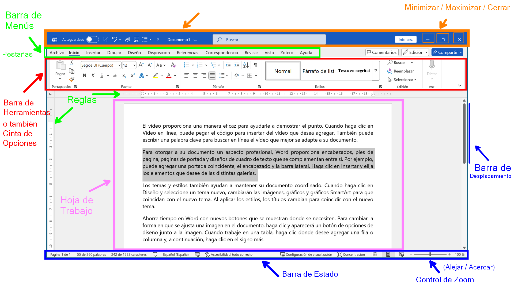

Introducción a Microsoft Word
Concepto - Entorno de trabajo - partes de la ventana.
Resumen de la Clase
En esta clase damos inicio al módulo de Word con una introducción a Microsoft Word, conociendo su entorno y herramientas principales.
Conceptos:
1. ¿Qué es Word?
Es un programa de procesamiento de texto, diseñado para ayudarle a crear documentos de escritura. Con diversas herramientas de formato de documentos, Word permite organizar y escribir documentos de forma más eficaz.
Usos principales:
- Creación de cartas, informes y currículos.
- Elaboración de memorandos y ensayos.
- Diseño de folletos y trípticos.
- Revisión ortográfica y gramatical automatizada.
- Formateo y diseño avanzado de páginas.
2. Ventana Principal de Word
Word organiza las opciones y herramientas en distintas partes que a continuación se muestran en la interfaz de usuario:

Partes de la Ventana Principal de Word
- Barra de Título: Muestra el nombre del documento de trabajo actual y el nombre del programa. También contiene los botones para minimizar, maximizar y cerrar la ventana.
- Pestañas (Barra de Menús): Categorías principales que contienen las herramientas (Inicio, Insertar, Diseño, Disposición, etc.).
- Cinta de Opciones (Barra de herramientas): Agrupa todos los comandos, opciones y herramientas de Word organizados en fichas o pestañas.
- Área de Trabajo (Hoja): Es el espacio principal donde se escribe y edita el contenido textual y visual.
- Barra de Estado: Proporciona información sobre el documento, como número de página, recuento de palabras y el idioma. También podemos controlar el zoom para acercar o alejar la hoja
- Regla: Compuesta por una regla horizontal y una vertical. Se utiliza para medir y alinear objetos, ajustar márgenes y establecer tabulaciones o sangrías en el texto.
- Barra de Desplazamiento: Permite navegar verticalmente por las diferentes páginas que componen el documento.